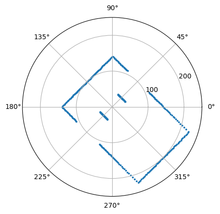
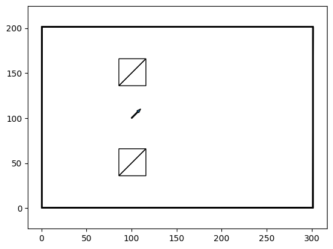
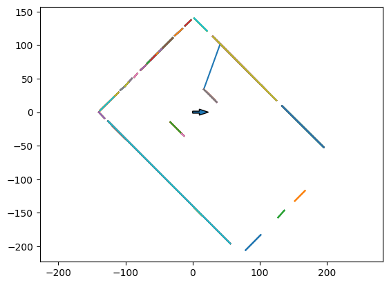
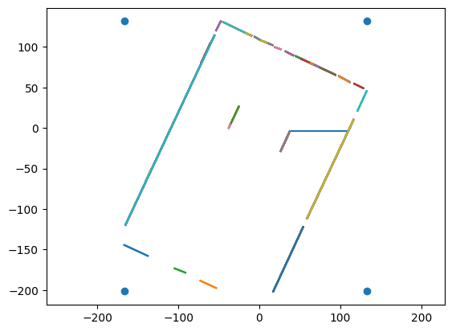

Navigate the Coupe de France de robotique#
from LidarSim.lidar_sim import LidarSimulator
import matplotlib.pyplot as plt
import numpy as np
%matplotlib inline
from LidarSim.lidar_sim import LidarSimulator
import Utilities.utilities as utilities
from SplitAndMerge.split_and_merge import SplitAndMerge
Parameters#
scenario = 'no obstacle'
point = [100, 100]
yaw = np.radians(45)
lidar_error = 0.0
sm_dist_threshold=0.005
sm_min_points_per_segment=5
merge = True
precision = 1000
pose_precision = 1e-08
lidar_error = 0.002
sm_dist_threshold=0.05
sm_min_points_per_segment=4
precision = 10
pose_precision = 1e-02
scenario = 'both long walls segmented'
def create_scenario(ls, scenario):
if scenario == 'no obstacle':
return
if scenario == 'obstacles but all walls visible':
ls.add_obstacle(201, 101, np.radians(0), 30, 30)
ls.add_obstacle(51, 51, np.radians(45), 30, 30)
ls.add_obstacle(51, 101, np.radians(0), 30, 30)
ls.add_obstacle(51, 151, np.radians(45), 30, 30)
ls.add_obstacle(251, 51, np.radians(45), 30, 30)
return
if scenario == 'one short wall obstructed':
ls.add_obstacle(201, 101, np.radians(0), 30, 30)
ls.add_obstacle(51, 51, np.radians(45), 30, 30)
ls.add_obstacle(61, 101, np.radians(0), 30, 30)
ls.add_obstacle(51, 151, np.radians(45), 30, 30)
ls.add_obstacle(251, 51, np.radians(45), 30, 30)
return
if scenario == 'long wall segmented':
ls.add_obstacle(101, 51, np.radians(0), 30, 30)
if scenario == 'both long walls segmented':
ls.add_obstacle(101, 51, np.radians(0), 30, 30)
ls.add_obstacle(101, 151, np.radians(0), 30, 30)
return
test_lidar = LidarSimulator("robocup.stl", error=lidar_error)
create_scenario(test_lidar, scenario)
plot_scan = test_lidar.get_lidar_points(point[0], point[1], yaw)
triangles = test_lidar.get_env_triangles(point[0], point[1], yaw)
triangles_map = test_lidar.get_map_triangles()
fig, ax = plt.subplots(subplot_kw={'projection': 'polar'})
ax.scatter(plot_scan[:, 0], plot_scan[:, 1], s=3.0)
ax.set_rmax(250)
ax.set_rticks([100, 200]) # Less radial ticks
ax.grid(True)

x = []
y = []
for alpha, r in plot_scan:
x.append(r * np.cos(alpha))
y.append(r * np.sin(alpha))
Reality in World Coordinates#
fig,ax = plt.subplots()
ax.axis('equal')
plt.arrow(point[0], point[1], 10 * np.cos(yaw), 10 * np.sin(yaw), width=1.0)
for t in triangles_map:
ax.fill(t[:, 0],t[:, 1],fill=False)

## Find lines in Lidar coordinates
sam = SplitAndMerge(line_point_dist_threshold=sm_dist_threshold, min_points_per_segment=sm_min_points_per_segment)
alpha_a, r_a, segend, seglen, pointIdx_a = sam.extractLines(x, y)
def merge_segments(alpha_a, r_a, segend, seglen, pointIdx_a, precision):
if not merge:
return segend, seglen, pointIdx_a
alpha_a_round = set(np.trunc(alpha_a * 1000) / 1000)
r_a_round = set(np.trunc(r_a * 1000) / 1000)
N = len(alpha_a_round)
r_segend = []
r_seglen = []
r_pointIdx_a = []
for alpha in alpha_a_round:
select_index_alpha = np.isclose(alpha_a, alpha, atol=1 / precision)
r_a_round = set(np.trunc(r_a[select_index_alpha] * 1000) / 1000)
send = segend[select_index_alpha]
slen = seglen[select_index_alpha]
sidx = pointIdx_a[select_index_alpha]
for radius in r_a_round:
select_index_r = np.isclose(r_a[select_index_alpha], radius, atol=1 / precision)
send_f = send[select_index_r]
slen_f = slen[select_index_r]
sidx_f = sidx[select_index_r]
# check for wrap
if len(sidx_f) > 1 and sidx_f[-1][1] - sidx_f[0][0] > 300:
x_min = min(send_f[:, 0].min(), send_f[:, 2].min())
x_max = max(send_f[:, 0].max(), send_f[:, 2].max())
y_min = np.concatenate([send_f[:, 1], send_f[:, 3]])[np.concatenate([send_f[:, 0] == x_min, send_f[:, 2] == x_min])][0]
y_max = np.concatenate([send_f[:, 1], send_f[:, 3]])[np.concatenate([send_f[:, 0] == x_max, send_f[:, 2] == x_max])][0]
r_segend.append([x_min, y_min, x_max, y_max])
r_seglen.append(np.array(slen_f).sum())
r_pointIdx_a.append([sidx[-1][0], sidx[0][1]])
else:
r_segend.append([send_f[0][0], send_f[0][1], send_f[-1][2], send_f[-1][3]])
r_seglen.append(np.array(slen_f).sum())
r_pointIdx_a.append([sidx_f[0][0], sidx_f[-1][1]])
N = len(r_segend)
ret_segend = np.zeros((N, 4))
ret_seglen = np.zeros((N))
ret_pointIdx_a = np.zeros((N, 2), dtype=np.int64)
for i in range(N):
ret_segend[i] = r_segend[i]
ret_seglen[i] = r_seglen[i]
ret_pointIdx_a[i] = r_pointIdx_a[i]
return ret_segend, ret_seglen, ret_pointIdx_a
segend, seglen, pointIdx_a = merge_segments(alpha_a, r_a, segend, seglen, pointIdx_a, precision)
fig,ax = plt.subplots()
ax.axis('equal')
plt.arrow(0, 0, 10 * np.cos(0), 10 * np.sin(0), width=3.0)
for j in range(segend.shape[0]):
ax.plot([segend[j,0], segend[j,2]], [segend[j,1], segend[j,3]])

Find Bounding Box#
Assumption: Line with most points is part of border
fig,ax = plt.subplots()
ax.axis('equal')
plt.arrow(0, 0, 10 * np.cos(0), 10 * np.sin(0), width=3.0)
for j in range(segend.shape[0]):
ax.plot([segend[j,0], segend[j,2]], [segend[j,1], segend[j,3]])
index_maxlen = np.flip(np.argsort(seglen))[0]
ax.plot([segend[index_maxlen,0], segend[index_maxlen,2]], [segend[index_maxlen,1], segend[index_maxlen,3]], 'r+')
[<matplotlib.lines.Line2D at 0x12a0e22d0>]
index_maxlen = np.flip(np.argsort(seglen))[0]
r = np.sqrt((segend[index_maxlen,2] - segend[index_maxlen,0])**2 + (segend[index_maxlen,3] - segend[index_maxlen,1])**2)
c = (segend[index_maxlen,2] - segend[index_maxlen,0]) / r
s = (segend[index_maxlen,3] - segend[index_maxlen,1]) / r
theta = -np.arctan2(segend[index_maxlen,3] - segend[index_maxlen,1], segend[index_maxlen,2] - segend[index_maxlen,0])
R = np.array(((c, -s), (s, c)))
seg_start_rot = np.dot(R.transpose(), segend[:, 0:2].transpose())
seg_end_rot = np.dot(R.transpose(), segend[:, 2:4].transpose())
# Calculate bounding box
x_min = min(seg_start_rot[0].min(), seg_end_rot[0].min())
y_min = min(seg_start_rot[1].min(), seg_end_rot[1].min())
x_max = max(seg_start_rot[0].max(), seg_end_rot[0].max())
y_max = max(seg_start_rot[1].max(), seg_end_rot[1].max())
fig,ax = plt.subplots()
ax.axis('equal')
plt.scatter([x_min, x_min, x_max, x_max], [y_min, y_max, y_min, y_max])
for j in range(seg_start_rot.shape[1]):
ax.plot([seg_start_rot[0][j], seg_end_rot[0][j]], [seg_start_rot[1][j], seg_end_rot[1][j]])

Validation#
Are the four corners visible?
Do we see a rectangle?
l1 = x_max - x_min
l2 = y_max - y_min
if l2 > l1:
print("check orientation")
check orientation
if not np.isclose(l1, [300.0], rtol=pose_precision):
print("invalid rectangle lenght: %s" % l1)
if not np.isclose(l2, [200.0], rtol=pose_precision):
print("invalid rectangle width: %s" % l2)
invalid rectangle width: 333.0397172792745
Find Pose#
pose = []
# add wall thickness
pose.append(-x_min + 1.0)
pose.append(-y_min + 1.0)
pose.append(theta)
pose
[167.6416328251205, 202.54497547182595, -1.2234634416458623]
print(point + [yaw])
[100, 100, 0.7853981633974483]
if not np.isclose(pose[0], point[0], rtol=pose_precision):
print("invalid pose x: %s expected %s" % (pose[0], point[0]))
if not np.isclose(pose[1], point[1], rtol=pose_precision):
print("invalid pose y: %s expected %s" % (pose[1], point[1]))
if not np.isclose(pose[2], yaw, rtol=pose_precision):
print("invalid pose theta: %s expected %s" % (pose[2], yaw))
invalid pose x: 167.6416328251205 expected 100
invalid pose y: 202.54497547182595 expected 100
invalid pose theta: -1.2234634416458623 expected 0.7853981633974483